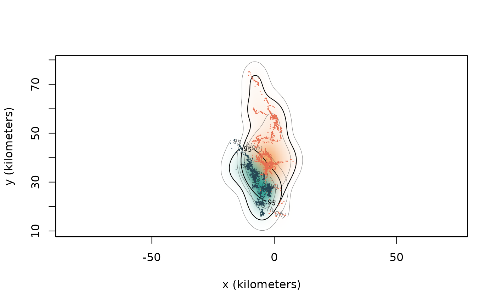
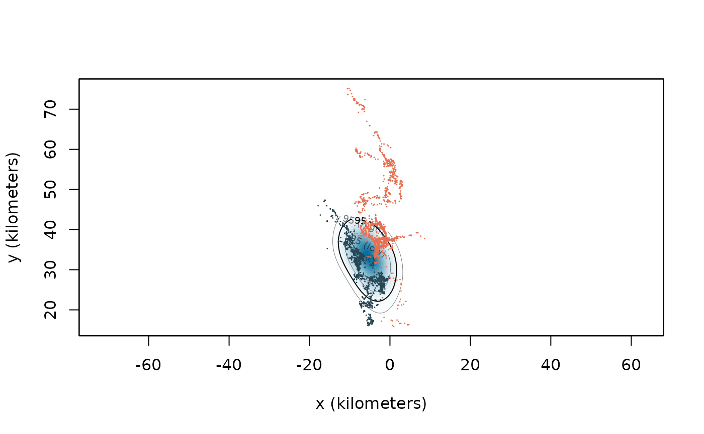
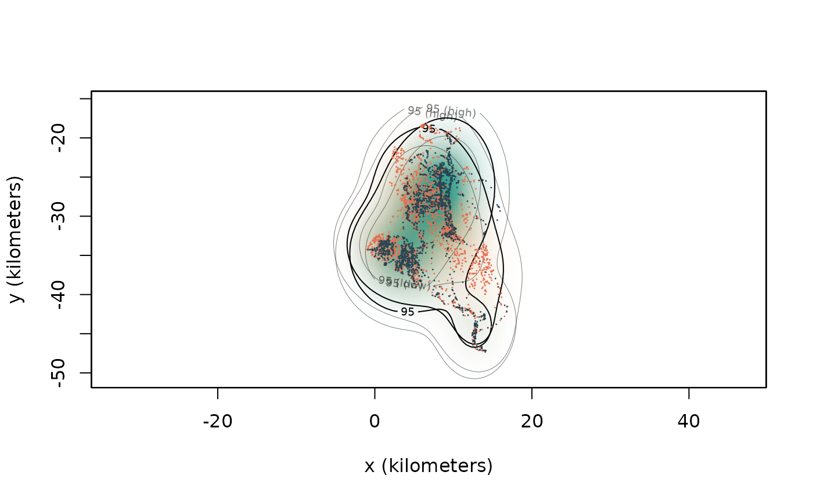
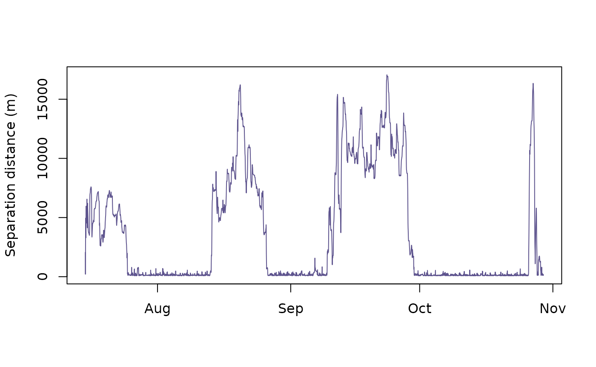
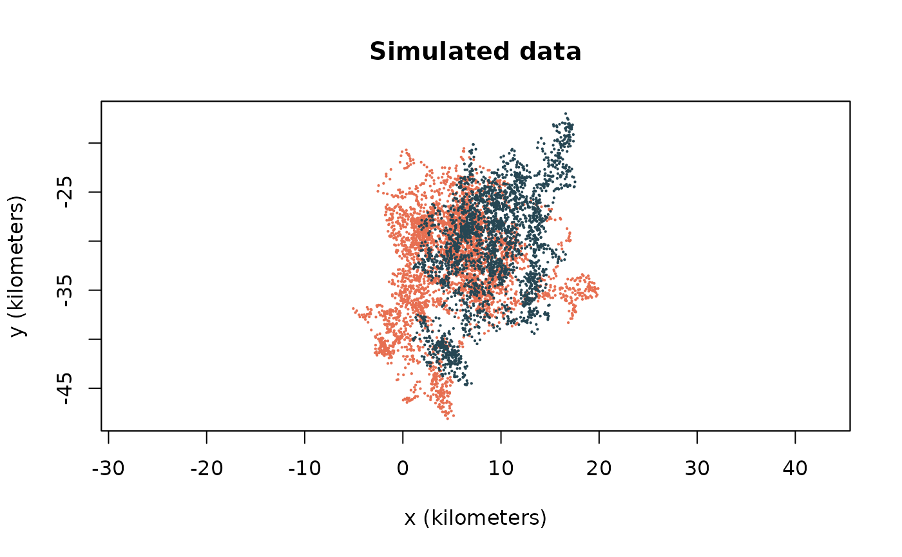
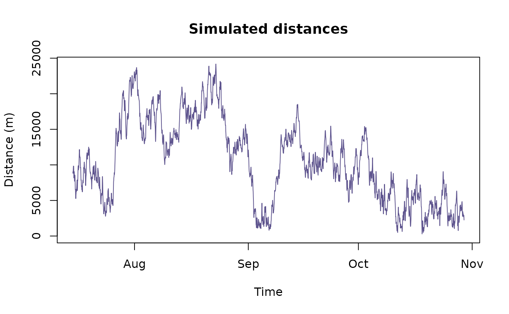
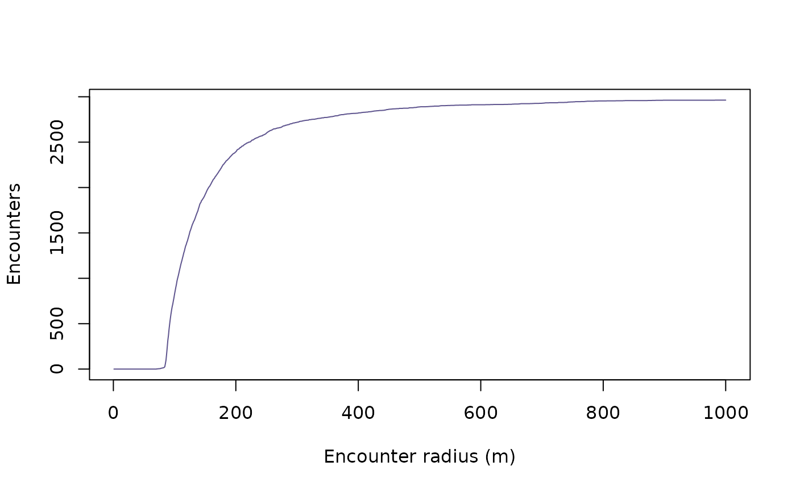

vignettes/interactions.Rmd
interactions.RmdThis vignette details methods that can be used for studying interactions between individuals from location data. The metrics described in this vignette include:
We will assume that you have already an understanding of how to fit ctmm movement models to your tracking data (see vignette("variogram")), as well as how to estimate home-range areas (see vignette("akde")). Here we will use the buffalo data in our examples.
Home-range overlap describes the extent to which a pair of individuals share the same space. Overlap is typically quantified by the first-estimating home ranges from tracking data and then applying an overlap metric to the range estimates. The default overlap estimator in ctmm is a bias-corrected version of the Bhattacharyya coefficient ().
library(ctmm) #load the package
data("buffalo") #import the data
projection(buffalo) <- median(buffalo) # reproject the data
# Fit the movement models to the tracking data
FITS <- list()
for(i in 1:length(buffalo))
{
GUESS <- ctmm.guess(buffalo[[i]],interactive=FALSE)
FITS[[i]] <- ctmm.select(buffalo[[i]],GUESS)
}
names(FITS) <- names(buffalo)
# calculate AKDES on a consistent grid
AKDES <- akde(buffalo,FITS,weights=TRUE,dt.plot=FALSE)With the fitted models and estimated home-range areas in hand, the next step is to estimate the Bhattacharyya coefficient using the overlap() function.
OVER <- overlap(AKDES)The overlap function returns an object of class overlap, which is a list with elements DOF and CI.
class(OVER)## [1] "overlap"
names(OVER)## [1] "DOF" "CI"The DOF slot contains information on the degrees of freedom of each estimated overlap value, whereas the CI slot contains the estimated overlap values and their confidence intervals.
OVER$CI## , , low
##
## Cilla Gabs Mvubu Pepper Queen
## Cilla 1.000000e+00 8.974219e-01 9.510518e-01 7.971138e-10 4.769027e-11
## Gabs 8.974219e-01 1.000000e+00 8.543964e-01 9.264102e-10 6.491430e-11
## Mvubu 9.510518e-01 8.543964e-01 1.000000e+00 1.208349e-09 7.312016e-11
## Pepper 7.971138e-10 9.264102e-10 1.208349e-09 1.000000e+00 3.596742e-01
## Queen 4.769027e-11 6.491430e-11 7.312016e-11 3.596742e-01 1.000000e+00
## Toni 4.414511e-23 3.456152e-23 2.159934e-22 3.197930e-01 9.371314e-03
## Toni
## Cilla 4.414511e-23
## Gabs 3.456152e-23
## Mvubu 2.159934e-22
## Pepper 3.197930e-01
## Queen 9.371314e-03
## Toni 1.000000e+00
##
## , , est
##
## Cilla Gabs Mvubu Pepper Queen
## Cilla 1.000000e+00 9.976234e-01 9.974721e-01 8.371554e-07 2.823166e-07
## Gabs 9.976234e-01 1.000000e+00 9.914584e-01 5.288795e-06 8.648153e-06
## Mvubu 9.974721e-01 9.914584e-01 1.000000e+00 1.275752e-06 4.989072e-07
## Pepper 8.371554e-07 5.288795e-06 1.275752e-06 1.000000e+00 6.490225e-01
## Queen 2.823166e-07 8.648153e-06 4.989072e-07 6.490225e-01 1.000000e+00
## Toni 1.244679e-16 4.773284e-12 1.146514e-15 5.556637e-01 6.540082e-02
## Toni
## Cilla 1.244679e-16
## Gabs 4.773284e-12
## Mvubu 1.146514e-15
## Pepper 5.556637e-01
## Queen 6.540082e-02
## Toni 1.000000e+00
##
## , , high
##
## Cilla Gabs Mvubu Pepper Queen
## Cilla 1.000000e+00 1.000000000 1.000000e+00 0.0002191542 0.0002363162
## Gabs 1.000000e+00 1.000000000 1.000000e+00 0.0030145139 0.0192125915
## Mvubu 1.000000e+00 1.000000000 1.000000e+00 0.0003234070 0.0004263494
## Pepper 2.191542e-04 0.003014514 3.234070e-04 1.0000000000 0.9099836997
## Queen 2.363162e-04 0.019212592 4.263494e-04 0.9099836997 1.0000000000
## Toni 2.879705e-11 0.000107714 3.531767e-10 0.8051233270 0.2719415948
## Toni
## Cilla 2.879705e-11
## Gabs 1.077140e-04
## Mvubu 3.531767e-10
## Pepper 8.051233e-01
## Queen 2.719416e-01
## Toni 1.000000e+00Because the Bhattacharyya coefficient is a symmetric measure of overlap (ranging from 0-1), the resulting matrix is also symmetric. If you’re interested in extracting the matrix of the point estimates, they are stored in the est slot of the CI slot.
OVER$CI[,,"est"]## Cilla Gabs Mvubu Pepper Queen
## Cilla 1.000000e+00 9.976234e-01 9.974721e-01 8.371554e-07 2.823166e-07
## Gabs 9.976234e-01 1.000000e+00 9.914584e-01 5.288795e-06 8.648153e-06
## Mvubu 9.974721e-01 9.914584e-01 1.000000e+00 1.275752e-06 4.989072e-07
## Pepper 8.371554e-07 5.288795e-06 1.275752e-06 1.000000e+00 6.490225e-01
## Queen 2.823166e-07 8.648153e-06 4.989072e-07 6.490225e-01 1.000000e+00
## Toni 1.244679e-16 4.773284e-12 1.146514e-15 5.556637e-01 6.540082e-02
## Toni
## Cilla 1.244679e-16
## Gabs 4.773284e-12
## Mvubu 1.146514e-15
## Pepper 5.556637e-01
## Queen 6.540082e-02
## Toni 1.000000e+00Alternatively, if you’re interested in extracting overlap values for specific pairs, they can easily be pulled out of the overlap object either by row/column names, or by their numerical indices.
# pairwise CIs
OVER$CI["Pepper","Toni",]## low est high
## 0.3197930 0.5556637 0.8051233
OVER$CI["Queen","Toni",]## low est high
## 0.009371314 0.065400820 0.271941595The home range—a spatially dependent PDF—describes an animal’s long-run space use. Home-range overlap (a single number) describes the potential for interactions to occur. In contrast, the Conditional Distribution of Encounters (CDE) is a spatially defined PDF that describes the long-term encounter location probabilities for movement within home ranges. For additional information, see the relevant paper: , or the help file help("encounter").
We will work with Pepper and Queen, and start by plotting their tracking data and home-range estimates.
plot(buffalo[c("Pepper", "Queen")],
UD=AKDES[c("Pepper", "Queen")],
col = c("#e76f51", "#264653"),
col.DF=c("#f4a261", "#2a9d8f"),
col.grid = NA)## DOP values missing. Assuming DOP=1.
## DOP values missing. Assuming DOP=1.
Visually, we can see that there is a decent amount of overlap between these two animals. The overlap estimate confirms this.
OVER$CI["Pepper","Queen",]## low est high
## 0.3596742 0.6490225 0.9099837This overlap suggests a reasonably strong potential for these animals to encounter one another, but this then begs the question of where might these two individuals meet? Under the assumption that an encounter were to occur, the CDE provides an answer to this question. this is estimated by applying the cde() function on a list of AKDE home range estimates.
CDE <- cde(AKDES[c("Pepper", "Queen")])
#Visualise the CDE
plot(buffalo[c("Pepper", "Queen")],
col=c("#e76f51", "#264653"),
UD=CDE,
col.DF="#046C9A",
col.grid = NA)## DOP values missing. Assuming DOP=1.
## DOP values missing. Assuming DOP=1.
As a note, because the CDE is estimated directly from the home-ranges areas, any bias in the home-range estimates is propagated to the estimated CDE.
Here we will work with Pepper and Queen, and again start by plotting their tracking data and home-range estimates.
plot(buffalo[c("Cilla", "Mvubu")],
UD=AKDES[c("Cilla", "Mvubu")],
col = c("#e76f51", "#264653"),
col.DF=c("#f4a261", "#2a9d8f"),
col.grid = NA)## DOP values missing. Assuming DOP=1.
## DOP values missing. Assuming DOP=1.
We can see substantial overlap between these two individuals, so we know they share the same space, but we don’t know to what extent they tend to share the same space at the same time (the overlap estimates described above provide no information on spatiotemporal overlap). Pairwise separation distances are a good place to start for understanding if pairs of individuals are attracted to, or avoid, one another. From a pair of tracks (class telemetry) and model-fit objects (class ctmm), pairwise distances can be estimated in ctmm using the distances() function.
This function returns a data.frame that contains the estimated separation distances, the confidence intervals on the estimates, and the timestamps.
head(DISTS)## low est high t timestamp
## 1 1927.72822 2060.694 2195.8120 1121403720 2005-07-15 05:02:00
## 2 41.71841 212.107 450.1718 1121405640 2005-07-15 05:34:00
## 3 4230.05054 4445.083 4662.7132 1121409300 2005-07-15 06:35:00
## 4 4827.70160 4958.439 5090.0318 1121410920 2005-07-15 07:02:00
## 5 3929.21369 4066.184 4204.3028 1121412840 2005-07-15 07:34:00
## 6 3153.48461 3289.111 3426.1316 1121414520 2005-07-15 08:02:00Visualising the separation distances over time can then provide information on how these individuals tend to interact over time.
plot(DISTS$est ~ DISTS$timestamp,
type = "l",
col = "#5e548e",
ylab = "Separation distance (m)",
xlab = "")
Here we see that although the mean separation distance is 3577.4861416(m) there were three distinct periods where Cilla and Mvubu were extremely close to one another, versus four periods where they drifted apart.
Separation distances can provide useful descriptions of the behaviour of pairs of animals, but are these distances meaningful? Or, seen another way, what are they saying about Cilla and Mvubu’s relationship? Are they actively staying close to one another? Are they avoiding one another? Or are these just the result of independent movement? Answering these questions requires something that we can compare the observed separation distances against. With the distance estimates alone, we don’t have a null model to compare against, but we can generate one via simulation (see help("simulate")).
cilla_sim <- simulate(FITS$Cilla,t=buffalo$Cilla$t)
mvubu_sim <- simulate(FITS$Mvubu,t=buffalo$Mvubu$t)
sim_dists <- distances(list(cilla_sim, mvubu_sim),FITS[c("Cilla","Mvubu")])
plot(list(cilla_sim, mvubu_sim),
col = c("#e76f51", "#264653"),
main = "Simulated data")
plot(sim_dists$est ~ sim_dists$timestamp,
type = "l",
col = "#5e548e",
main = "Simulated distances",
ylab = "Distance (m)",
xlab = "Time",
ylim = c(0,max(sim_dists$est)))
This suggests that Cilla and Mvubu are closer together than one might expect from completely random movement (particularly during certain times of the year). But this conclusion is based off of only one simulated track, which is only one of an infinitely large number of potential paths the animal could have taken. Ideally, you would repeat this process many, many times to obtain an average. The proximity() function calculates this (note: this function can be slow).
PROXIMITY <- proximity(buffalo[c("Cilla","Mvubu")],
FITS[c("Cilla","Mvubu")],
GUESS = ctmm(error=FALSE)) #this is to speed up the calculation
PROXIMITY## low est high
## 0.2336587 0.3972563 0.6333218proximity() outputs a ratio estimate with confidence intervals, where values <1 indicate that the two individuals are closer on average than expected for independent movement, 1 is consistent with independent movement, and values >1 indicate that the individuals are farther from each other on average than expected for independent movement. Therefore, if the CIs contain 1, then the distance is insignificant with a p-value threshold of 1-level (two-sided) or half that for a one-sided test.
Often, a core reason for tracking animals is to attempt to link individual behaviour with higher-level ecological processes. For many processes (disease transmission dynamics, mating, predator-prey dynamics), this is governed by how individuals’ movement behaviour translates to encounter rates. The observed separation distances contain information on the number of encounter events (and by extension encounter rates). We can get at this fairly simply by defining an encounter radius. For an example of this type of analysis in action see: . Here we can arbitrarily define an encounter event between Cilla and Mvubu as when they were within 100m of one another.
DISTS$encounter <- ifelse(DISTS$est <= 100, 1, 0)We can visualise this to get a feeling for when and how often they encountered one another over the sampling period.
plot(DISTS$encounter ~ DISTS$timestamp, xlab = "", ylab = "Encounter", main = "Scatter plot")From this we can also estimate how many times Cilla and Mvubu encountered one another during the sampling period, or, alternatively, their encounter rate.
n <- sum(DISTS$encounter)
t <- "day" %#% (DISTS$t[nrow(DISTS)] - DISTS$t[1])
cat("There were an estimated ", n, " encounters between Cilla and Mvubu, and their encounter rate was ", round(n/t,2), " per day.")## There were an estimated 829 encounters between Cilla and Mvubu, and their encounter rate was 7.78 per day.The choice of 100m is arbitrary, however, so if you are interested in applying such an analysis, it is recommended that you perform a sensitivity analysis on the value of this radius.
enc_rad <- 1:1000
N <- vector("numeric", 1000)
for(i in 1:length(enc_rad)){
N[i] <- sum(ifelse(DISTS$est <= enc_rad[i], 1, 0))
}
#visualise the results
plot(N ~ enc_rad,
ylab = "Encounters",
xlab = "Encounter radius (m)",
type = "l",
col = "#5e548e")
As an additional caveat, if a pair of individuals encounter one another, a single encounter event may persist for some time. Depending on how finely sampled the data may be, there is thus the potential for double counting encounter events (or more). Care should therefore be taken when performing such an analysis.
Another metric of encounter rates is available from the encounter() function, which estimates the relative encounter rates between individuals.
RATES <- encounter(AKDES)This is an overlap class object with all of the same structure as defined above. Looking at the points estimates we can see these relative encounter rates.
RATES$CI[,,"est"]## Cilla Gabs Mvubu Pepper Queen
## Cilla Inf 1.013833e-08 1.217934e-08 0.000000e+00 0.000000e+00
## Gabs 1.013833e-08 Inf 9.782347e-09 0.000000e+00 0.000000e+00
## Mvubu 1.217934e-08 9.782347e-09 Inf 0.000000e+00 0.000000e+00
## Pepper 0.000000e+00 0.000000e+00 0.000000e+00 Inf 3.273059e-09
## Queen 0.000000e+00 0.000000e+00 0.000000e+00 3.273059e-09 Inf
## Toni 0.000000e+00 0.000000e+00 0.000000e+00 2.087975e-09 3.071601e-11
## Toni
## Cilla 0.000000e+00
## Gabs 0.000000e+00
## Mvubu 0.000000e+00
## Pepper 2.087975e-09
## Queen 3.071601e-11
## Toni InfFrom this matrix we can see that Cilla and Mvubu tend to encounter to one another ca. three times as often at Toni and Pepper. Note: these are unitless measures of encounter rates.